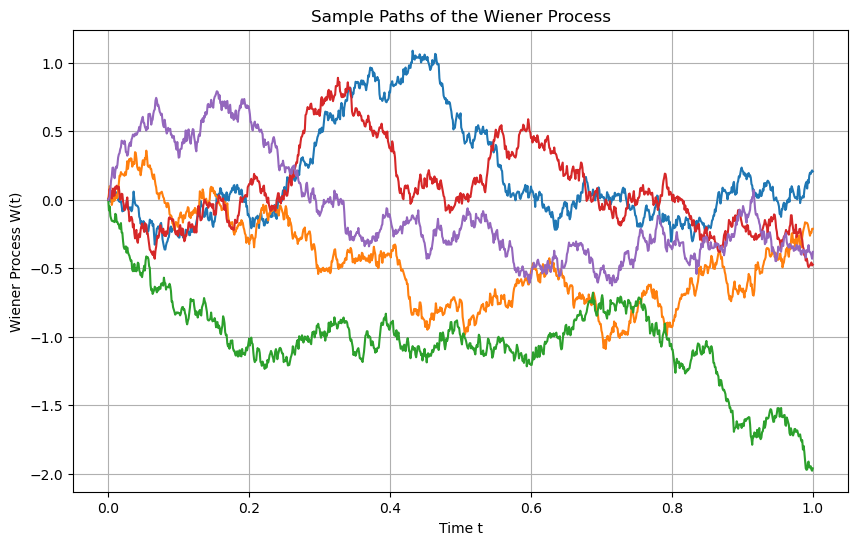

Stochastic Calculus#
Deterministic dynamical systems#
Numerical solution of dynamical systems: inflation targetting#
import numpy as np
import matplotlib.pyplot as plt
def simulate_inflation(theta, pi_hat, pi_t0, Delta, N):
# Time grid
time = np.linspace(0, N * Delta, N + 1)
# Arrays to store the results
pi_forward = np.zeros(N + 1)
pi_backward = np.zeros(N + 1)
pi_analytical = np.zeros(N + 1)
# Initial condition
pi_forward[0] = pi_t0
pi_backward[0] = pi_t0
# Analytical Solution
pi_analytical = pi_hat + (pi_t0 - pi_hat) * np.exp(-theta * time)
# Forward Euler Scheme
for i in range(N):
pi_forward[i + 1] = pi_forward[i] + Delta * theta * (pi_hat - pi_forward[i])
# Backward Euler Scheme
for i in range(N):
pi_backward[i + 1] = (pi_backward[i] + Delta * theta * pi_hat) / (1 + Delta * theta)
return time, pi_forward, pi_backward, pi_analytical
# Parameters for normal regime
theta_normal = 0.1
Delta_normal = 0.1
pi_hat = 2.0
pi_t0 = 5.0
N = 100
# Parameters for challenging regime
theta_challenging = 1.0
Delta_challenging = 1.0
# Simulate for normal regime
time_normal, pi_forward_normal, pi_backward_normal, pi_analytical_normal = simulate_inflation(
theta_normal, pi_hat, pi_t0, Delta_normal, N)
# Simulate for challenging regime
time_challenging, pi_forward_challenging, pi_backward_challenging, pi_analytical_challenging = simulate_inflation(
theta_challenging, pi_hat, pi_t0, Delta_challenging, N)
# Plot the results for normal regime
plt.figure(figsize=(12, 6))
plt.plot(time_normal, pi_forward_normal, label='Forward Euler (Normal)', marker='o', linestyle='--')
plt.plot(time_normal, pi_backward_normal, label='Backward Euler (Normal)', marker='x', linestyle='--')
plt.plot(time_normal, pi_analytical_normal, label='Analytical Solution (Normal)', linestyle='-', linewidth=2)
plt.xlabel('Time')
plt.ylabel('Inflation Rate')
plt.title('Inflation Targeting Model Simulation (Normal Regime)')
plt.legend()
plt.grid(True)
plt.show()
# Plot the results for challenging regime
plt.figure(figsize=(12, 6))
plt.plot(time_challenging, pi_forward_challenging, label='Forward Euler (Challenging)', marker='o', linestyle='--')
plt.plot(time_challenging, pi_backward_challenging, label='Backward Euler (Challenging)', marker='x', linestyle='--')
plt.plot(time_challenging, pi_analytical_challenging, label='Analytical Solution (Challenging)', linestyle='-', linewidth=2)
plt.xlabel('Time')
plt.ylabel('Inflation Rate')
plt.title('Inflation Targeting Model Simulation (Challenging Regime)')
plt.legend()
plt.grid(True)
plt.show()

The Wiener Process#
Simulation of the Wiener process (univariate)#
import matplotlib.pyplot as plt
import numpy as np
# Set the parameters for the Wiener process
T = 1.0 # total time
n = 1000 # number of steps
dt = T / n # time increment
t = np.linspace(0, T, n+1) # time points
# Number of paths to simulate
num_paths = 5
# Set up the plot
plt.figure(figsize=(10, 6))
# Simulate multiple paths
for _ in range(num_paths):
W = np.zeros(n+1) # Initialize the Wiener process for each path
for i in range(n):
W[i+1] = W[i] + np.sqrt(dt) * np.random.randn()
plt.plot(t, W, label=f'Path {_+1}')
# Customize the plot
plt.title('Sample Paths of the Wiener Process')
plt.xlabel('Time t')
plt.ylabel('Wiener Process W(t)')
plt.grid(True)
# Show the plot
plt.show()

Simulation using Gaussian processes#
import GPy
import numpy as np
import matplotlib.pyplot as plt
# Time points at which to sample the Wiener process
t = np.linspace(0, 1, 1000).reshape(-1, 1)
# Define the Brownian motion kernel
brownian_kernel = GPy.kern.Brownian(input_dim=1, variance=1.0)
# Create a GP model with zero mean function
mean_function = GPy.mappings.Constant(input_dim=1, output_dim=1, value=0)
model = GPy.models.GPRegression(t, np.zeros_like(t), kernel=brownian_kernel, mean_function=mean_function)
# Ensure correct model optimization
model.optimize()
# Sample paths from the GP model
num_samples = 5
samples = model.posterior_samples_f(t, size=num_samples)
# Plot the sampled paths
plt.figure(figsize=(10, 6))
for i in range(num_samples):
plt.plot(t, samples[:, :, i], label=f'Sample {i+1}')
plt.title('Sampled Paths from a Wiener Process using Gaussian Processes')
plt.xlabel('Time')
plt.ylabel('W(t)')
plt.show()